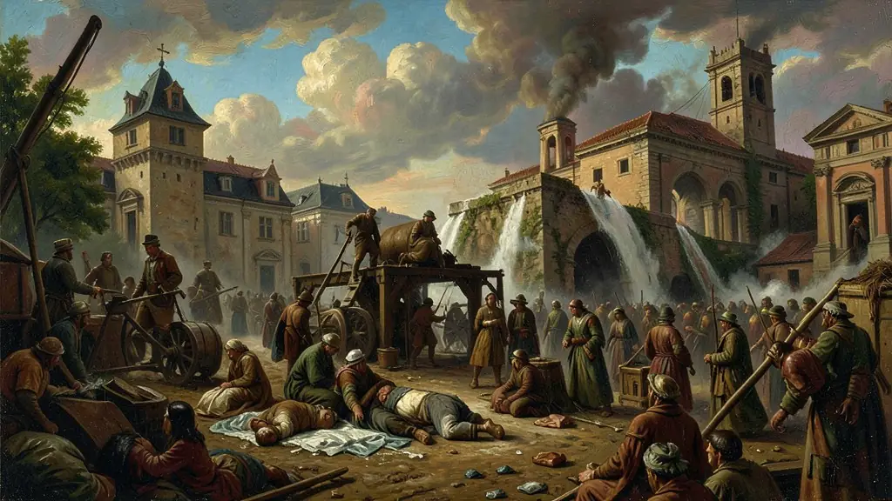
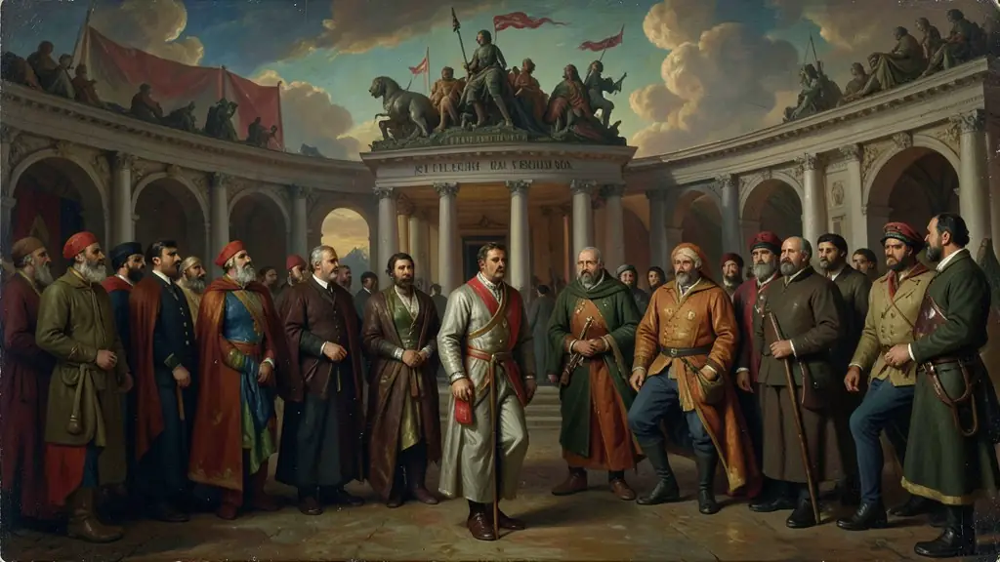
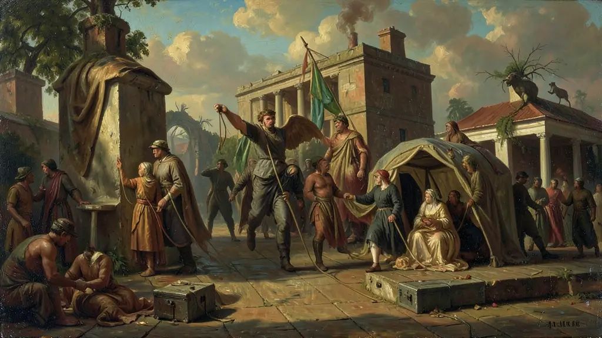

Capítulo 01
1. Segunda Revolução Industrial e a Fome por Recursos
A Europa produzia demais. As fábricas de aço e química precisavam de minérios que o solo europeu já não tinha em abundância. A única solução era o expansionismo. A África tornou-se o grande reservatório de carvão e a Ásia o grande mercado consumidor para os tecidos e máquinas de Manchester. O Imperialismo foi a fase superior do capitalismo industrial do século XIX.

Capítulo 02
2. Conferência de Berlim: A Partilha de um Continente
O chanceler alemão Otto von Bismarck reuniu os líderes europeus para 'organizar' o roubo da África. Sem a presença de um único africano, eles dividiram o território em áreas de influência. Tribos inimigas foram colocadas no mesmo país, e famílias foram separadas por fronteiras arbitrárias. Isso garantiu a ordem entre os europeus, mas semeou as guerras civis africanas do século XX.

Capítulo 03
3. Darwinismo Social: A Justificativa 'Científica'
Inspirados erroneamente nas ideias de Charles Darwin, cientistas da época tentaram provar que o homem branco europeu era biologicamente superior ao negro e ao asiático. Eles acreditavam que, por terem tecnologia superior, tinham o direito natural de governar as 'raças inferiores'. Rudyard Kipling chamou isso de 'O Fardo do Homem Branco' — a nobre missão de levar a luz da civilização para os bárbaros.

Capítulo 04
4. Imperialismo na Ásia: Índia e China
A Inglaterra transformou a Índia em sua 'joia da coroa', destruindo a indústria têxtil local para vender produtos ingleses. Na China, os ingleses traficavam ópio para viciar a população e forçar o comércio. Quando a China reagiu na Guerra do Ópio, foi bombardeada e obrigada a entregar Hong Kong para os britânicos. O imperialismo asiático foi a quebra forçada de impérios milenares.
Capítulo 05
5. Consequências: Geopolítica e Subdesenvolvimento
As potências europeias não investiram em educação ou saúde para as populações locais; apenas em ferrovias e portos para retirar a riqueza. Quando a descolonização ocorreu no século XX, os países africanos e asiáticos herdaram uma infraestrutura voltada apenas para a exportação e sociedades divididas por conflitos criados pelos europeus. O subdesenvolvimento atual é a cicatriz aberta desse período.
O Imperialismo (ou Neocolonialismo) do século XIX foi o processo de expansão das potências industriais europeias, dos EUA e do Japão sobre a África e a Ásia, impulsionado pela busca por novos mercados, matérias-primas e áreas para investimento de capitais excedentes. Diferente do colonialismo mercantilista dos séculos XVI-XVIII, este foi um projeto de dominação industrial e financeira, legitimado por ideologias racistas e pseudocientíficas como o Darwinismo Social e a 'missão civilizatória' do homem branco.
A Partilha da África, formalizada na Conferência de Berlim (1884-1885), ignorou as diversidades étnicas e culturais do continente, redesenhando o mapa africano de acordo com os interesses das metrópoles. Este processo deixou sequelas profundas, como guerras civis e pobreza estrutural, que ainda hoje assolam muitas nações africanas. Na Ásia, a resistência ao imperialismo manifestou-se em conflitos como a Guerra do Ópio (China) e a Revolta dos Cipaios (Índia), revelando as tensões entre a tradição local e a modernização imposta.
Para o Enem, o estudo do Imperialismo é a chave para compreender as raízes da Primeira Guerra Mundial, que foi essencialmente uma disputa por território e prestígio imperial. A compreensão de como o sistema capitalista internacional se expandiu através da força militar e da exploração econômica permite uma análise crítica da atual divisão internacional do trabalho e das relações Norte-Sul na contemporaneidade.
Fonte: HOBSBAWM, Eric. A Era dos Impérios (1875-1914). Rio de Janeiro: Paz e Terra, 2012.
Atividades interativas
Questões para fixar
O termo 'Darwinismo Social' foi utilizado no século XIX para justificar o Imperialismo. Essa teoria baseava-se na ideia de que:
Qual foi o principal objetivo da Conferência de Berlim (1884-1885)?
Qual foi o principal motivo que levou as potências europeias a buscarem novos mercados consumidores, fontes de matérias-primas e áreas para investir o capital acumulado no final do século XIX?
Qual teoria pseudocientífica foi criada para justificar a colonização da África e da Ásia pelas potências europeias?
Qual evento histórico foi uma consequência direta da disputa entre as potências europeias por territórios na África e na Ásia?